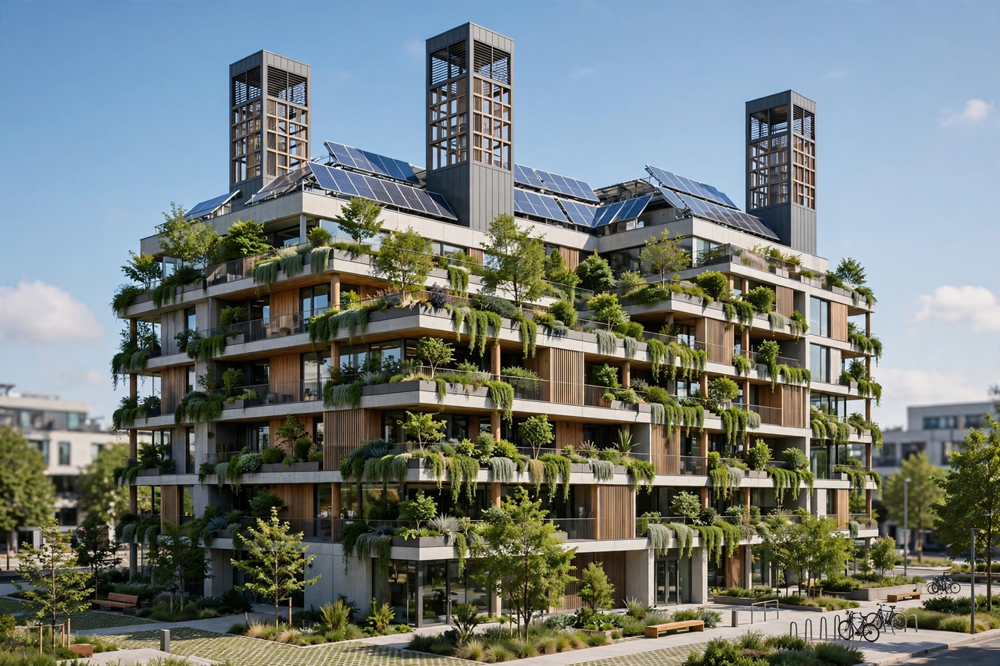

Sustainable architecture is architecture that seeks to minimise the negative environmental impact of buildings through efficient use of energy, water, and materials, and through design that supports occupant health and the surrounding ecosystem over the building's whole life cycle. Buildings account for roughly a third of global energy use and energy-related carbon emissions when construction is included, making sustainable design central to climate policy.

| Sustainable architecture | |
|---|---|
| Goals | Low operational and embodied carbon; resource efficiency; occupant wellbeing |
| Strategies | Passive design, insulation, renewable energy, recycled and low-carbon materials, water recycling |
| Certifications | LEED, BREEAM, Passivhaus, Living Building Challenge, WELL |
| Key concepts | Life-cycle assessment, net-zero energy, biophilic design |
Vernacular traditions — thick-walled desert houses, shaded courtyards, Indonesian stilt houses raised for airflow — long embodied climate-responsive design. The modern movement grew from the 1970s energy crises and solar-house experiments, matured with rating systems such as BREEAM (1990) and LEED (1998), and now embraces rigorous standards such as the German Passivhaus, which cuts heating demand by up to 90% through airtight, super-insulated envelopes.
Widely cited projects include the Bullitt Center in Seattle, designed to the Living Building Challenge; the Bosco Verticale residential towers in Milan, whose facades carry hundreds of trees; Singapore's extensive green-building programme; and BedZED, the pioneering zero-carbon housing development in London. In the tropics, architects such as Vo Trong Nghia in Vietnam and firms across Indonesia have revived bamboo construction for low-carbon buildings.
Critics point to "greenwashing", the cost premium of certification, and performance gaps between modelled and actual energy use. Embodied emissions from concrete and steel, and the difficulty of retrofitting the existing building stock — most buildings that will exist in 2050 are already built — remain major challenges.